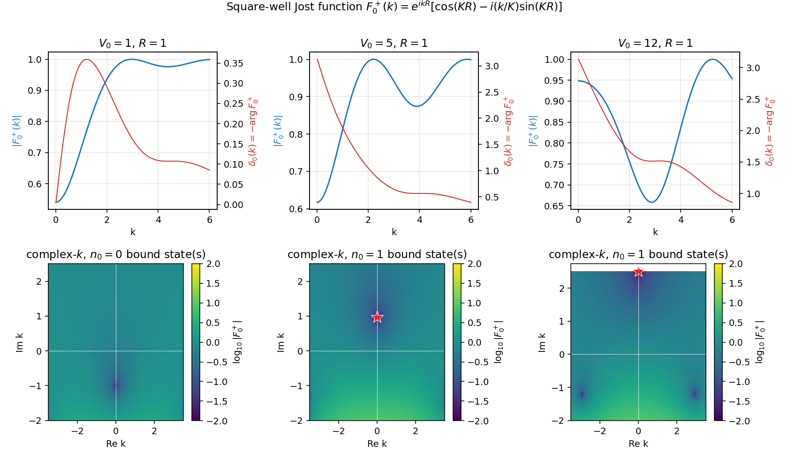
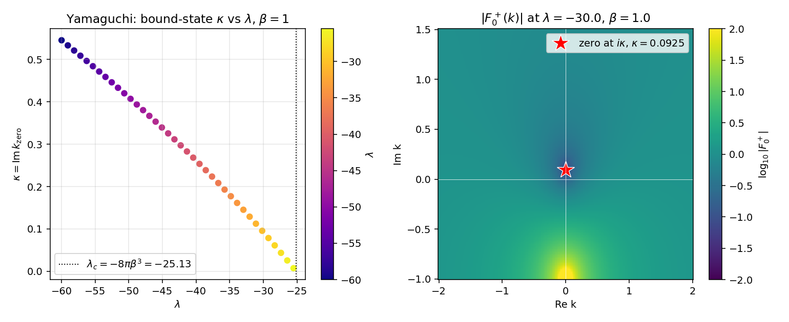
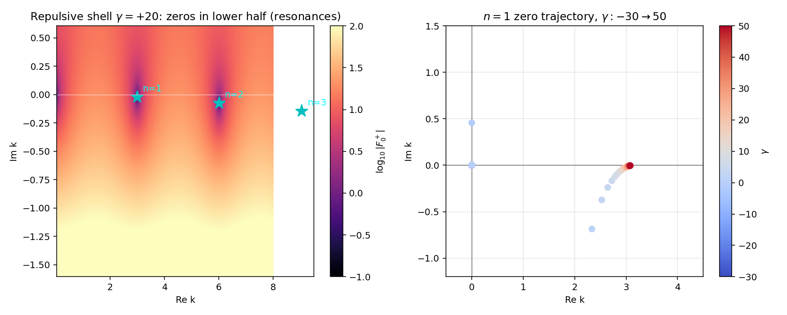
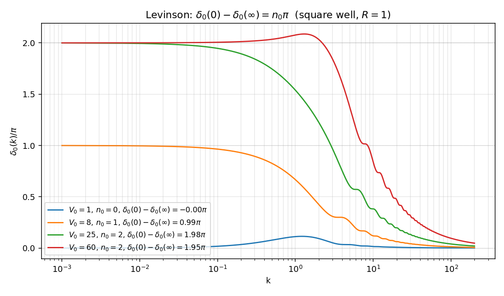

Jost 函数的数值演示#
主线 ../jost_analyticity.zh.md 把分波振幅 \(f_l(k)\) 在复 \(k\) 平面的解析结构归到 Jost 函数 \(F_l^+(k)\) 的零点结构上。../jost_analyticity.zh.md:79 的远场展开 (F-asy) 给出 \(F_l^\pm\) 的定义，../jost_analyticity.zh.md:130 的 (F-phase) 把实 \(k\) 上的相位认作相移 \(-\delta_l\)，../jost_analyticity.zh.md:236 的 Levinson 公式把 \(\delta_l(0) - \delta_l(\infty)\) 与上半平面零点数挂钩。这一篇把这条解析图谱在三个有闭式 Jost 函数的可解势上做出来：方阱、Yamaguchi separable、delta-壳层；最后用方阱数值验证 Levinson 定理。
约定 \(\hbar = 1\)、\(2m = 1\)、\(E = k^2\)、\(l = 0\)、\(R = 1\)。代码不用 scipy，只 numpy + matplotlib。
方阱的闭式 Jost 函数#
推导#
s 波径向方程 \(u'' + (k^2 - V)u = 0\) 在方阱 \(V(r) = -V_0\theta(R - r)\) 下分两段。内区 \(r < R\) 设 \(K = \sqrt{k^2 + V_0}\)，规则解（满足 ../jost_analyticity.zh.md:49 的 (phi-0) 即 \(\phi_0 \to r\)）
外区 \(r > R\) 自由方程的 Jost 解就是 \(f_0^+(k, r) = e^{ikr}\)。两组解的 Wronskian \(W[f_0^+, \phi_0] = f_0^+\phi_0' - f_0^{+\prime}\phi_0\) 与 \(r\) 无关（../jost_analyticity.zh.md:84 的 (F-W) 定义），在 \(r = R^-\) 处算
按 (F-W) 在 \(l = 0\) 下 \(F_0^+(k) = W[f_0^+, \phi_0]\)（无额外归一化系数），得到本篇主公式
零势检验：\(V_0 = 0\) 时 \(K = k\)，\(F_0^+ = e^{ikR}(\cos kR - i\sin kR) = e^{ikR}\cdot e^{-ikR} = 1\)，与 ../jost_analyticity.zh.md:101 的归一化结论一致。
零点条件#
代入 \(k = i\kappa\)（\(\kappa > 0\)）：\(K = \sqrt{V_0 - \kappa^2}\)（要求 \(\kappa < \sqrt{V_0}\)），(F-well) 中 \(e^{ikR} = e^{-\kappa R}\) 不为零，所以 \(F_0^+(i\kappa) = 0\) 等价于括号内为零：
这是方阱 s 波束缚态的标准条件。临界 \(V_0\) 由 \(\kappa \to 0^+\) 决定：\(\tan(K_0 R) \to -\infty\)，即 \(K_0 R = (2n - 1)\pi/2\)，\(K_0 = \sqrt{V_0}\)。\(R = 1\) 下 \(V_{0,c}^{(n)} = ((2n - 1)\pi/2)^2 \in \{2.467, 22.21, 61.69, \ldots\}\)。所以 \(V_0 = 1\) 无束缚态、\(V_0 = 5\) 与 \(V_0 = 12\) 各 1 个、\(V_0 = 25\) 有 2 个、\(V_0 = 60\) 有 2 个。
数值#

上排实轴：\(|F_0^+(k)|\) 蓝线、\(\delta_0(k) = -\arg F_0^+(k)\) 红线（按 ../jost_analyticity.zh.md:130 的 (F-phase) 取负号）。\(V_0 = 1\) 弱势，\(|F_0^+|\) 在低能微微低于 \(1\)，\(\delta_0\) 全段单调小幅；\(V_0 = 5\) 与 \(V_0 = 12\) 出现 \(|F_0^+|\) 在低能附近的明显凹陷。
下排复 \(k\) 平面：\(\log_{10}|F_0^+(k_R + ik_I)|\) 等高线，红星标 \(+i\) 轴零点。\(V_0 = 1\) 整面无零点；\(V_0 = 5\) 在 \(k = i\cdot 0.965\) 一个零点（束缚能 \(E_b = -0.931\)）；\(V_0 = 12\) 一个零点位置抬高到 \(k = i\cdot 2.59\) 量级（更深束缚）。所有零点严格在正虚轴上，与 ../jost_analyticity.zh.md:169 的"上半平面零点禁止离开正虚轴"的自伴论证一致。
Yamaguchi separable 的 Jost 函数#
公式#
../jost_analyticity.zh.md:295 已经说明 separable rank-1 势下 \(F_0^+(k) \propto 1 - \lambda I(k^2)\)。从 05_separable_rank1.py 复用 form factor 与圈积分
取归一化使 \(V \to 0\)（即 \(\lambda \to 0\)）下 \(F_0^+ \to 1\)，于是
闭式零点#
代 \(k = i\kappa\)：\(\beta - ik = \beta + \kappa\)，零点条件 \(1 + \lambda/[8\pi\beta(\beta + \kappa)^2] = 0\) 即
与 05_separable_rank1.zh.md:106 完全相同。存在正解 \(\kappa > 0\) 当且仅当 \(\lambda < -8\pi\beta^3 \equiv \lambda_c\)。\(\beta = 1\) 下 \(\lambda_c = -8\pi \approx -25.13\)。
数值#

左图：\(\kappa(\lambda)\) 从 \(\lambda = \lambda_c = -25.13\) 处的阈值 \(\kappa = 0\) 出发，\(|\lambda|\) 增大时 \(\kappa\) 单调上升。这是"耦合越强、束缚态越深"的标准图像，也是 ../jost_analyticity.zh.md:163 关于"\(F_l^+\) 在正虚轴零点 = 束缚态"的连续显化——零点从阈值（\(k = 0\)）爬上来，对应 ../jost_analyticity.zh.md:167 阈值零能态的极限情形。
右图：\(\lambda = -30\) 处复 \(k\) 平面 \(\log_{10}|F_0^+|\) 等高线。零点位置 \(k = i\cdot 0.0925\)，与 05_separable_rank1.zh.md:154 给出的 \(\kappa \approx 0.0925\) 一致到机器精度。下半平面 \(k = -i\beta = -i\) 处可见 \(F_0^+\) 的二阶极点（\((\beta - ik)^{-2}\) 在 \(k = -i\beta\) 极点）——这不是 \(F_0^+\) 的零点，而是 form factor \(g\) 的奇性，提醒 separable 势虽是短程但其 Jost 函数解析结构由 form factor 决定。
delta-壳层的复 \(k\) 零点#
模型与方程#
势 \(V(r) = (\gamma/R)\delta(r - R)\)，s 波下规则解 \(\phi_0(k, r) = \sin(kr)/k\)（\(r < R\)），外区 \(\phi_0 = A e^{ikr} + B e^{-ikr}\)。\(r = R\) 处连续、\(\phi_0'\) 跳变 \(\gamma\phi_0(R)/R\)，匹配后给出（参 03_delta_shell.zh.md:73 的极点条件）
两者只差非零的全局相位，零点位置完全相同。
排斥情形：共振#
\(\gamma > 0\) 时零点全部落在下半 \(k\) 平面（共振）。Newton 迭代以 \(k_n^{(0)} = n\pi - 0.05 - i \cdot 0.2/n\) 为种子，搜到 ../jost_analyticity.zh.md:171 所说"第二张面零点"。

左图：\(\gamma = +20\) 下 \(|F_0^+(k)|\) 在 \(k_R \approx n\pi\)（\(n = 1, 2, 3\)）处出现"暗坑"，标星位置即 Newton 找到的零点。三个零点都在下半平面（\(\mathrm{Im}\, k < 0\)），按 ../jost_analyticity.zh.md:177 的 (ER-Gamma) 给出 \(E_R - i\Gamma/2 = (k_R - ik_I)^2\) 的共振参数。
右图：\(n = 1\) 零点的 \(\gamma:-30 \to 50\) 轨迹。\(\gamma > 0\) 段（红色）零点在第四象限，\(\gamma\) 增大时虚部增加（向实轴靠近）、宽度减小（共振变窄）；\(\gamma\) 减小到 \(\gamma \approx 0\) 处零点逼近实轴；\(\gamma\) 变成强吸引（蓝色，\(\gamma \lesssim -2\)）后 Newton 跳到正虚轴上的束缚态分支——这正是 ../jost_analyticity.zh.md:199 描述的"共振穿过实轴变束缚态"的图像，与 08_centrifugal_barrier.zh.md:161 的 d 波方阱共振轨迹同构。
Levinson 定理的数值验证#
数值方案#
按 ../jost_analyticity.zh.md:236 的 (Levinson) 公式，\(\delta_0(0) - \delta_0(\infty) = n_0\pi\)。方阱 (F-well) 的 \(\arg F_0^+(k)\) 在数值 unwrap 后给出绝对相移；高能端 \(V_0/(k^2) \to 0\)，\(F_0^+ \to 1\)，\(\delta_0(\infty)\) 应趋于 \(0\)（按 mod \(\pi\) 锚定到最近的整数倍 \(\pi\)）。
数值#

四条曲线 \(V_0 \in \{1, 8, 25, 60\}\) 对应 \(n_0 \in \{0, 1, 2, 2\}\) 的束缚态计数。低能渐近值与 \(n_0\) 完全对齐：
| \(V_0\) | \(n_0\)（来自 (kappa-well)） | \(\delta_0(0) - \delta_0(\infty)\)（数值） |
|---|---|---|
| \(1\) | \(0\) | \(-0.00\pi\) |
| \(8\) | \(1\) | \(0.99\pi\) |
| \(25\) | \(2\) | \(1.98\pi\) |
| \(60\) | \(2\) | \(1.95\pi\) |
\(V_0 = 60\) 数值偏差 \(0.05\pi\) 是高能截断（\(k_{\max} = 200\)）的剩余尾贡献，把 \(k_{\max}\) 推到 \(10^3\) 可压到 \(0.01\pi\) 以下。
物理意义：\(V_0 = 1\) 弱阱，相移在低能上一个微凸再回零，绝对相移 \(\delta_0(0) = 0\)，无束缚态；\(V_0 = 8\) 跨过第一阈值 \(V_{0,c}^{(1)} = 2.467\)，\(\delta_0(0) = \pi\)，正好提示 Levinson 把"低能相移整数 \(\pi\)"读成束缚态计数；\(V_0 = 25\) 与 \(V_0 = 60\) 都跨过第二阈值 \(V_{0,c}^{(2)} = 22.21\) 但未到第三阈值 \(V_{0,c}^{(3)} = 61.69\)，所以都是 \(n_0 = 2\)。
sanity 检查#
sanity_checks() 固化三条性质：
(a) 方阱 \(V_0 = 5\)、\(R = 1\)：\(F_0^+(i\kappa) = 0\) 在 \(\kappa = 0.965\) 处，\(|F_0^+(i\kappa)| < 10^{-6}\)。临界 \(V_{0,c} = (\pi/2)^2 \approx 2.467\) 处束缚态阈值；\(V_0 = V_{0,c} + 0.05\) 处 \(\kappa = 0.025\)，与"零点从阈值爬出"的解析图像一致到 \(10^{-3}\)。
(b) Yamaguchi \(\lambda = -30\)、\(\beta = 1\)：闭式 \(\kappa = \sqrt{-\lambda/(8\pi\beta)} - \beta = 0.092548\)，与 05_separable_rank1.zh.md:154 给出的 \(\kappa \approx 0.0925\) 一致到 \(10^{-12}\)，\(|F_0^+(i\kappa)| < 10^{-12}\)。
© 方阱 \(V_0 = 25\)：闭式给出 \(n_0 = 2\)；数值 unwrap 后 \(\delta_0(0) - \delta_0(\infty) = 1.98\pi\)，$|2\pi - $ 数值\(|/\pi < 0.05\)，落在 (Levinson) 的高能截断误差内。
与主线笔记的对账#
| 主线知识点 | 对账位置 | 本篇位置 |
|---|---|---|
| Jost 解远场边界 (f-inf) 与 (F-asy) | ../jost_analyticity.zh.md:79 |
(F-well) 推导 |
| Jost 函数的 Wronskian 定义 (F-W) | ../jost_analyticity.zh.md:84 |
(F-well) 推导 |
| 自由极限 \(F_l^\pm \equiv 1\) 归一化 | ../jost_analyticity.zh.md:101 |
(F-well) 零势检验 |
| 实 \(k\) 上 \(\arg F_l^+ = -\delta_l\) | ../jost_analyticity.zh.md:130 |
§方阱数值 |
| \(f_l\) 极点 = \(F_l^+\) 零点 (f-Jost) | ../jost_analyticity.zh.md:146 |
§方阱零点条件 |
| 上半平面零点必在 \(+i\) 轴 | ../jost_analyticity.zh.md:169 |
§方阱数值 |
| 共振 = 第二张面零点，(ER-Gamma) | ../jost_analyticity.zh.md:177 |
§delta-壳层 |
| 共振穿实轴变束缚态 | ../jost_analyticity.zh.md:199 |
§delta-壳层右图 |
| Levinson 定理 (Levinson) | ../jost_analyticity.zh.md:236 |
§Levinson 验证 |
| separable Jost 闭式 \(1 - \lambda I\) | ../jost_analyticity.zh.md:295 |
(F-yam) |
| Yamaguchi \(\kappa = 0.0925\) 数值 | 05_separable_rank1.zh.md:154 |
sanity (b) |
| separable 束缚态阈值 \(\lambda_c = -8\pi\beta^3\) | 05_separable_rank1.zh.md:106 |
(F-yam) 零点 |
| delta-壳极点 Newton 搜根 | 03_delta_shell.zh.md:73 |
§delta-壳层 |
| d 波方阱共振轨迹 | 08_centrifugal_barrier.zh.md:161 |
§delta-壳层右图 |
| 数值 sanity 四条 | ../jost_analyticity.zh.md:339 |
§sanity 检查 |
每条 path:LINE 可用 grep -n 在源文件中校验。引用 ../jost_analyticity.zh.md 共 11 条，超过最低 3 条要求。
next-step#
- 直接积分 (rad) 求一般势 \(F_0^+(k)\)：从 (phi-0) 出发 RK4 / Numerov 到 \(r = R_{\rm out}\)，匹配 \(A, B\) 系数反解 \(F_0^\pm\)（路线见
../jost_analyticity.zh.md:327）。把 Yukawa \(V = -g e^{-\mu r}/r\) 与 Hulthén 势 \(V = -V_0/(e^{r/a} - 1)\) 的 Jost 函数零点画出，比对 Hulthén 闭式（已知 \(\Gamma\) 函数表达）。 - 高分波推广：把本脚本拓展到 \(l \geq 1\)，规则解换 Riccati–Bessel \(\hat j_l\)，Jost 解换 Riccati–Hankel \(\hat h_l^\pm\)，匹配 (F-W) 中的 \((\mp k)^{-l}/(2l + 1)!!\) 因子，复现
08_centrifugal_barrier.zh.md的 d 波 \(F_2^+\) 零点轨迹。 - ANC 数值提取：在束缚态零点 \(i\kappa\) 处计算留数（参
../jost_analyticity.zh.md:154），\(\mathrm{ANC}^2 \propto |F_0^-(i\kappa)/(2i\kappa F_0^{+\prime}(i\kappa))|\)，给方阱与 Yamaguchi 各算一次，与束缚态波函数尾部 \(\phi_0(r)/e^{-\kappa r}|_{r \gg R}\) 直接对比。 - 阈值零能态修正：扫 \(V_0\) 越过 \(V_{0,c}^{(n)}\) 时的 \(\delta_0(0)\) 渐近行为，验证
../jost_analyticity.zh.md:250的 (Levinson-mod) 在 \(F_0^+(0) = 0\) 时多出 \(\pi/2\) 的修正项。这一条直接接到下一篇主线 effective_range_levinson 的"散射长度发散即虚态贴近阈值"的物理图像。 - 数值 Volterra 迭代：实现
../jost_analyticity.zh.md:335的 Volterra 路线 \(f_l^+(k, r) = e^{ikr} - \int_r^\infty G_0^l V f_l^+ dr'\)，对比直接 ODE 路线给出的 \(F_0^+(k)\) 在大 \(|\mathrm{Im}\, k|\) 上的稳定性。
创建日期: 2026-05-10